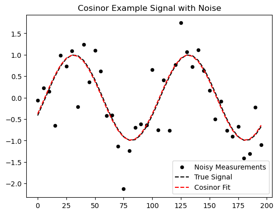

def f_signal_cosinor(t: np.array, phi: float, tau: float = 100.0) -> np.array:
return np.cos(2 * np.pi/tau * t - phi)
phi_true = 2.0
x_sample = np.arange(0, 200, 5)
y_sample = f_signal_cosinor(x_sample, phi_true)
y_sample_noisy = y_sample + np.random.normal(0, 0.5, x_sample.shape)
plt.scatter(x_sample,y_sample_noisy, color='k', s=20, label='Noisy Measurements')
plt.plot(x_sample, y_sample, ls = '--', color = 'k', label = 'True Signal');
plt.legend()
plt.title('Cosinor Example Signal with Noise');Phase Tools
Some routines for phase extraction from time series
Cosinor Analysis
The simplest and one of the most popular techniques is so-called cosinor analysis, which is a very fancy term for doing a linear regression on cosine transformed data.
\[ y = A \cos(x + \beta) \]
or in the form that I prefer:
\[q(t,\phi) = a_1 \sin(\omega t) + a_2 \cos(\omega t) \]
In cosinor analysis the \(\omega\) term (the frequency) is taken as a known quantity and the \(a_{1,2}\) terms are fit to minimize the least square error.
Then the phase \(\phi\) is given by \(\arg(a_2 + i a_1)\)
It is easy enough to use built in regression functions to find \(a_{1,2}\) but we can easily solve this ourselves. First, lets define the terms \(y\) is the signal, \(t\) is the sampling times the same length as \(y\). The matrix \(S\) is formed by taking the sin/cos of the time vectors and placing them in the columns \(S = [sin(\omega t); cos(\omega t)]\). Thus, we can write our system as:
\[ S a = y \]
where \(a = [a_1, a_2]\) are the two coefficients we want to solve for. This regression is especially easy to compute in this case because the matrix \(S\) has the property that the columns are orthogonal (S is a orthogonal matrix). This means that \(S^T S = I\), and we can solve the system with one matrix transpose multiplication.
\[\begin{align} Sa = y \\ S^T S a = S^T y, S^T S = I \\ a = S^T y \end{align}\]
Since \(S^T\) only has two columns we can write the matrix-vector product out for each component:
\[\begin{align} a_1 = \frac{ \sin(\omega t) \cdot y} { || \sin(\omega t) ||^2 } \\ a_2 = \frac { \cos(\omega t) \cdot y } { || \cos(\omega t) ||^2 } \end{align}\] Here is a quick implementation in python.
cosinor
cosinor (t:<built-infunctionarray>, y:<built-infunctionarray>, tau:float)
| Type | Details | |
|---|---|---|
| t | array | time vector |
| y | array | signal vector |
| tau | float | period of cosinor analysis |
| Returns | float | phase estimate |
cosinor_phase
cosinor_phase (a:<built-infunctionarray>)
a_coeffs = cosinor(x_sample, y_sample_noisy, 100.0)
print(f"Recovered Cosinor Parameters {a_coeffs[0]:.4f} sin(omega t) + {a_coeffs[1]:.4f} cos(omega t)")
print(f"Phase Estimate: {cosinor_phase(a_coeffs):.4f} versus the true phase: {phi_true:.4f}")
plt.scatter(x_sample,y_sample_noisy, color='k', s=20, label='Noisy Measurements')
plt.plot(x_sample, y_sample, ls = '--', color = 'k', label = 'True Signal')
plt.plot(x_sample, a_coeffs[0]*np.sin(2*np.pi/100.0 *x_sample) + a_coeffs[1]*np.cos(2*np.pi/100.0 *x_sample), ls = '--', color = 'r', label = 'Cosinor Fit');
plt.legend()
plt.title('Cosinor Example Signal with Noise');Recovered Cosinor Parameters 0.9207 sin(omega t) + -0.3776 cos(omega t)
Phase Estimate: 1.9600 versus the true phase: 2.0000
GOALS: Cosinor with gaps
One of the main challenges with the cosinor method is that it assumes that the data is continuous. This is not always the case. For example, if you are measuring a signal at a fixed time interval, but the signal is not present at all times, then you will have gaps in your data.
The GOALs algorithm (citation) is a modification of the cosinor method that allows for gaps in the data.
cosinor_goals
cosinor_goals (t, y, tau:float)
phi_true = 2.0
x_sample = np.hstack((np.arange(0, 20, 1), np.arange(40, 60, 1)))
y_sample = f_signal_cosinor(x_sample, phi_true)
y_sample_noisy = y_sample + np.random.normal(0, 0.5, x_sample.shape)
a_coeffs = cosinor_goals(x_sample, y_sample_noisy, 100.0)
print(f"Recovered GOALS Cosinor Parameters {a_coeffs[0]:.4f} sin(omega t) + {a_coeffs[1]:.4f} cos(omega t)")
print(f"GOALS Phase Estimate: {cosinor_phase(a_coeffs):.4f} versus the true phase: {phi_true:.4f}")
a_coeffs_plain = cosinor(x_sample, y_sample_noisy, 100.0)
print(f"Recovered Cosinor Parameters {a_coeffs_plain[0]:.4f} sin(omega t) + {a_coeffs_plain[1]:.4f} cos(omega t)")
print(f"Regular Cosinor Phase Estimate: {cosinor_phase(a_coeffs_plain):.4f} versus the true phase: {phi_true:.4f}")
x_fill = np.arange(0, 100, 1)
y_fill = f_signal_cosinor(x_fill, phi_true)
plt.scatter(x_sample,y_sample_noisy, color='k', s=20, label='Noisy Measurements')
plt.plot(x_fill, y_fill, ls = '--', color = 'k', label = 'True Signal')
plt.plot(x_fill, a_coeffs[0]*np.sin(2*np.pi/100.0 *x_fill) + a_coeffs[1]*np.cos(2*np.pi/100.0 *x_fill), ls = '--', color = 'r', label = 'GOALs Cosinor Fit');
plt.plot(x_fill, a_coeffs_plain[0]*np.sin(2*np.pi/100.0 *x_fill) + a_coeffs_plain[1]*np.cos(2*np.pi/100.0 *x_fill), ls = '--', color = 'b', label = 'Cosinor Fit');
plt.legend()
plt.title('Cosinor (GOALS) Example Signal with Noise');Recovered GOALS Cosinor Parameters 0.3053 sin(omega t) + -0.7676 cos(omega t)
GOALS Phase Estimate: 2.7630 versus the true phase: 2.0000
Recovered Cosinor Parameters 0.5447 sin(omega t) + -0.5027 cos(omega t)
Regular Cosinor Phase Estimate: 2.3162 versus the true phase: 2.0000